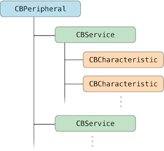

0x00 - overview
常见名称和缩写
MFI: make for ipad ,iphone, itouch 专们为苹果设备制作的设备
BLE: buletouch low energy，蓝牙4.0设备因为低耗电，所以也叫做BLE
peripheral,central: 外设和中心,发起连接的时central，被连接的设备为perilheral
service and characteristic : 服务和特征 每个设备会提供服务和特征，类似于服务端的api，但是机构不同。每个外设会有很多服务，每个服务中包含很多字段，这些字段的权限一般分为 读read，写write，通知notiy几种，就是我们连接设备后具体需要操作的内容。
Description 每个characteristic可以对应一个或多个Description用户描述characteristic的信息或属性
MFI 开发使用ExternalAccessory 框架
4.0 BLE 开发使用CoreBluetooth 框架
蓝牙主要分两部分：Central 和 Peripheral。
Central 主要负责发现和连接外设，Central 的主要类是 CBCentralManager；
Peripheral 主要负责监测收集和发送数据给Central，Peripheral 的主要类是CBPeripheral。
CBperipheral 是由一个或者多个CBService组成，CBService 又是由多个CBCharacteristic组成。
CBCharacteristic 是存放一些收集到的数据，CBCentralManager 可以对CBCharacteristic 的数据进行读写。
每个CBCharacteristic存放不同的数据，比如心跳数据，地理位置数据。

0x01 - Starting up a Central Manager
开始使用的时候需要先创建一CBCentralManager实例。
1 | myCentralManager = [[CBCentralManager alloc] initWithDelegate:self queue:nil options:nil]; |
参数nil 则默认在主队列。
当创建完以上的实例的时候，Central 回去调用 delegate 的centralManagerDidUpdateState: 这个方法确认蓝牙是否被Central所支持。
0x02 - scan
之后便是去扫描周边的外设：
1 | [myCentralManager scanForPeripheralsWithServices:nil options:nil]; |
发现外设的话会通过delegate去告诉外面。
1 | - (void)centralManager:(CBCentralManager *)central |
查找到想要的外设的时候需要停止扫描。
1 | [myCentralManager stopScan]; |
0x03 - Connecting to a Peripheral
开始连接外设，调用
1 | [myCentralManager connectPeripheral:peripheral options:nil]; |
这个函数。
连接成功会通过centralManager:didConnectPeripheral: 这个delegate方法告诉代理。
1 | - (void)centralManager:(CBCentralManager *)central |
0x04 - 通信
1. 获取CBService
接下来就是要获取数据了。
还记得 0x00 小节说过的CBPeripheral的结构么？要访问数据得先访问到CBService 然后再到CBCharacteristic。
通过过[peripheral discoverServices:nil]; 这个可以访问到CBPeripheral所有的Service。
Note:在实际开发中，这里的参数不能传nil，应该指定你要的UIIDs Service，以确保不会耗费不必要的电量和时间。
当找到指定的Service的时候，delegate会回调
1 | - (void)peripheral:(CBPeripheral *)peripheral |
2. 获取CBCharacteristic
找到Service之后，下一步就是找到Server里面的CBCharacteristic，然后读取所需的数据。
1 | [peripheral discoverCharacteristics:nil forService:interestingService]; |
Note: 同样的，在实际开发中，这里也是不能传nil的，需要你指定Characteristic 的 UUIDs，避免耗费不必要的电量和时间。
找到指定的Characteristic之后，同样是通过delegate回调
1 | - (void)peripheral:(CBPeripheral *)peripheral |
3. Retrieving the value of Characteristic
接下来就是要真正的开始读取数据了。读取Characteristic的数据通过readValueForCharacteristic:来读取。
1 | [peripheral readValueForCharacteristic:interestingCharacteristic]; |
之后回调会将数据返回给你
1 | - (void)peripheral:(CBPeripheral *)peripheral |
Note: 并不是所有的Characteristic都是可读的，你可以通过属性 CBCharacteristicPropertyRead 来确定。
4. Subscribing to a Characteristic’s Value
对于动态改变的值的话，需要订阅它，这样才能在值发生改变的时候及时收到通知。
1 | [peripheral setNotifyValue:YES forCharacteristic:interestingCharacteristic]; |
当你订阅/取消订阅 Characteristic 值的时候，peripheral 便会调用回调方法 peripheral:didUpdateNotificationStateForCharacteristic:error: ，当错误产生的时候就可以通过这个 delegate 获取到错误原因了。
1 | - (void)peripheral:(CBPeripheral *)peripheral |
Note: 并不是所有的Characteristic都支持订阅的，你可以通过CBCharacteristicPropertyNotify 和 CBCharacteristicPropertyIndicate 这两个常量来判断。
5. Write the Value of a Characteristic
Peripheral 可读当然也可写，当需要更新数据的时候可以调用writeValue:forCharacteristic:type: 写入数据
1 | [peripheral writeValue:dataToWrite forCharacteristic:interestingCharacteristic |
写入成功与否的回调是这个
1 | - (void)peripheral:(CBPeripheral *)peripheral |
6. 总结
蓝牙中心模式流程
1 | 1. 建立中心角色 |
蓝牙外设模式流程
1 | 1. 启动一个Peripheral管理对象 |
参考链接：